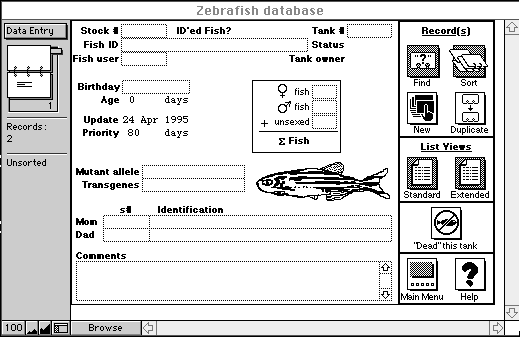

CHAPTER 1
GENERAL METHODS FOR ZEBRAFISH CARE
Keeping Track of Stocks
(Source: S. Russell)
An easy and efficient way to keep track of zebrafish stocks is to use a computer database. The following is a description of a database which runs on a Macintosh computer and that is presently being used at the University of Oregon. It is available on computer disk or by download:
http://fish.uoregon.edu/zf/files/zfdB.zip
The database was written using FileMaker Pro, an easy to use flat-file database program (Claris Corporation, Customer Relations, 5201 Patrick Henry Drive, Box 58168, Santa Clara CA 95052-8168, Phone (408) 727-8227, FAX (408) 987-3932).
The zebrafish database system
The database is composed of three separate databases (files) that interact with each other, the Zebrafish Database, the Tank Status Database, and the Users Database. The Zebrafish Database contains most of the information about the individual fish stocks. The Tank Status Database allows users to check easily the status, size, and location of any tank in the facility. The Users database explains the various user codes used in the main database.
The Zebrafish Database contains the following fields:
- ID - A few words identifying the fish. A descriptive name
- Tank # - Tank identification number
- Stock # - Stock # of the fish
- Status - Status of the fish and tank. Either "Alive", "Dead", or "Empty"
- User code - Code identifying the fish user
- Unsexed fish - Number of unsexed fish in the tank
- # females - Number of female fish in tank
- # males - Number of male fish in tank
- Total # fish - Total of all fish in the tank
- Birthday - Date of birth for the fish
- Age - Age of the fish in days
- Mutant allele - Identified mutant allele carried by the fish
- Transgenes - Any genetic material added in transgenic experiments
- Update - Date of last change to the record
- Priority - Days since last change in the record number (now largely obsolete)
- Mom's s# - Stock number of mother fish
- Mother's id - Mother's descriptive name
- Dad's s# - Stock number of father fish
- Father's id - Father's descriptive name
- Comments - Any additional information goes here
- Tank Size - Size of the fish tank, e.g. 5 gallon, 10 gallon, etc.
- Reason for death - Explanation for death of fish
- Original # males - Number of male fish at ~6-8 weeks of age
- Original # females - Number of female fish at ~6-8 weeks of age
- Original # fish - Number of fish at ~6-8 weeks of age
- Initial sex ratio - Original # females to original # males
- Sex ratio comments - Comments on fish at this age
The Users Database contains the following fields:
- User code - Code used to identify user
- Name - Full name of user
- User status - Status of user, e.g. currently with fish group, or no longer with fish group
The Tank Status Database contains the following fields:
- Tank # - Tank identification number
- Tank size - Size of the tank
- Tank location - Location of tank, e.g. which room
- User - Current user of the tank
- Status - Status of tank
Example of Zebrafish Database layout

Startup and Shutdown
Under Macintosh System 7, aliases of the database files can be created. An alias is a small file that points to the location of the original file on the disk. Open the alias, and the original file is opened. Aliases of the database files are placed in the "Startup Items" folder within the System Folder. The database is then automatically loaded upon startup of the Macintosh. The database is kept running continually during normal business hours. Users can browse and enter data into the database from the main machine, or can use other FileMaker Pro-equipped Macintoshes on a local network. Upon system shutdown, the database files are automatically backed up to a floppy disk using the CP Backup program in the MacTools package (Central Point Software, 3203 S.W. 154th Terrace, Beaverton OR 97006-9937, Phone (503) 690-8088).
Using the database
Layouts
Information about stocks is entered and viewed using different layouts. To switch between layouts, click on the button in the upper left corner of the screen and select a layout from the pop-up menu. The Data Entry layout is best for entering data and viewing single records. The List View layout is good for viewing many records at once. The Extended List displays a slightly different set of fields. The Full List is good for viewing complete records as a list. The Historical Data layout contains fields for recording the original ratio of males and females in a tank, and a field for recording the reason for death when a tank entry is deleted.
New Records
To create a new record for entering data, you will most likely want to use the Data Entry layout. Use the Layout button (described above) or select the button labeled "Data Entry" on the Welcome screen. Select "New Record" from the Edit menu. To duplicate the contents of the current record into a new one, select "Duplicate Record" from the Edit menu. When using the Data Entry layout, these commands are available as buttons located to the right.
The Fields
In most of the fields, data is entered in the usual manner. However, a few of the fields operate a little differently.
The Update field is entered automatically whenever a record is changed.
The Tank Size field is calculated for each tank number in the facility. This field cannot be selected for data entry.
The ΣFish field becomes whatever is entered into it, unless either the female or male fields have values. If either of these fields are defined, ΣFish equals females plus males (see "special note" below).
The Status field is calculated automatically, based on the values in the Tank# and ΣFish fields. The Status field works like this:
- If Tank# is defined and ΣFish is undefined, then Status equals "Empty".
- If Tank# and ΣFish are both defined, then Status equals "Alive".
- If Tank# and ΣFish are both undefined, then Status equals "Dead".
To change the Status of a record from "Alive" to "Dead", select "Dead this tank" from the Scripts menu. You will be asked to make an entry in the "Reason for death" field. When you have done so, press the "Continue" button. All the numbers in the females, males, and ΣFish fields will be deleted. The tank number will also be deleted. A new record with the old tank number and user code will be created for you.
The mutant allele field should not contain punctuation of any kind. Do not use commas, dashes, or any special symbols. An example follows:
Correct = b1 b4 b5
Incorrect = b-1, b-4, b-5
A search on the mutant allele field must be carried out in a special way. If you wish to search on b1, you will get b1, but you will also get any other mutant alleles with the characters "b1", such as b16, b104, etc. To avoid this, use the "exact" button when you make your Find request.
Find and Sort
When browsing records, remember first to filter the database for the records you want by using the "Find" command. The Data Entry layout is best for this. The Find command is in the Select menu, and is available as a button on the Data Entry layout. When the Find window is open, enter your search criteria in the boxes, and push the Find button located on the left side of the screen.
Next, order the records you have found using the "Sort" command. The Sort command is also in the select menu, and is available as a button on the Data Entry layout. The Sort window will appear. Select the sorting order desired by moving the field you wish to sort into the box on the right. The data must be resorted each time you filter the records. The panel on the left has information regarding the current sort status.
Network Etiquette
When opening a file over the network, please remember that the performance of the database will diminish. As a courtesy to other users, please finish your work quickly. If you receive a message to close the file, comply with the request. Always close any files you are no longer actively using.
Special note
If the "ΣFish" field looks funny, it may be because you entered numbers into the "males" and/or "females" fields and then forgot to delete the original number in the ΣFish field. To update the ΣFish number, delete the old number.
The Zebrafish Book